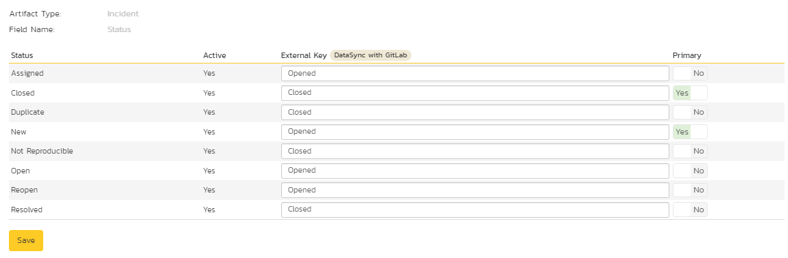

Using Spira with GitLab
This section outlines how to use SpiraTest, SpiraTeam or SpiraPlan (hereafter referred to as SpiraPlan) in conjunction with the GitLab integrated issue tracker.
STOP! Please make sure you have first read the Instructions in Setup before proceeding!
The GitLab issue tracker is a simple and lightweight tool used to track problems with an associated git repository. The built-in integration service enables two-way syncing of new incidents, new comments, statuses, and releases (milestones).
Configuring the Integration Service
This section outlines how to set up the integration service between GitLab and SpiraPlan. It assumes that you already have a working installation of SpiraPlan and a GitLab repository with an issue tracker. To setup the service, you must be logged into SpiraPlan as a user with System-Administrator level privileges.
Inside SpiraPlan, go to the Administration page and navigate to the Integration > Data Synchronization webpage. Check that you don't already have a Plug-In called "GitLabDataSync", as shown below:
If you already have a plug-in called GitLabDataSync, please click on its "edit" button, otherwise please click the "Add" button to create a new plug-in:

Now fill out this configuration page as follows:

You need to fill out the following fields for the GitLab Data Sync plugin to work properly:
-
Name -- This needs to be set to GitLabDataSync
-
Caption -- This is the display name of the plug-in, generally something generic like "GitLab" would work, but you should change it if you will be syncing with multiple GitLab projects.
-
Description -- The description of what you're using the plug-in for. This field is entirely optional and is not used by the system in any way.
-
Connection Info -- The location of your GitLab account, removing the actual repository name. For example, if you have a repository such as https://gitlab.com/gitlab-examples/velociraptor, you would simply enter "gitlab-examples" as the connection info. We will enter the repository name later when we setup the project mappings.
-
Login -- Your GitLab username
-
Password -- A GitLab personal access token with the "api" permission. You can create a new one at https://gitlab.com/profile/personal_access_tokens
-
Time Offset -- This should be set to 0, but if you find that changes are not being synced, try increasing the value to tell the plugin to offset timestamps
-
Custom 01 -- For on-premise GitLab installations only, please enter the name of your server (e.g. http://myserver), if left blank, the data synchronization will assume you are using the cloud URL for GitLab (https://www.gitlab.com)
The rest of the fields should be left blank. Once all those fields have been filled out, click the "Add" or "Save" button to save your changes.
Configuring Project Mappings
For this step, please ensure that you are in the SpiraPlan project you would like to sync with GitLab. For this example, the project is called "GitLab Data Sync."
Click on the "View Project Mappings" button for GitLab Data Sync. You need to fill out the following fields to sync correctly:
-
External Key -- The name of your GitLab repository. In the example above, where the URL in GitLab was https://gitlab.com/gitlab-examples/velociraptor, you would simply enter "velociraptor" for this setting.
-
Active -- Set this to yes so that the Data Sync plug-in knows to synchronize with this project.
Configuring the Incident Status Mapping
Now click the "Status" button within the "Incident" section to map the Incident statuses together. The purpose of this is so that the GitLab Data Sync plug-in knows what the equivalent status is in GitLab for an incident status in SpiraPlan.

You must map every status in the system. Descriptions of the field are below:
-
External Key -- Either opened or closed, which are the only two statuses in GitLab
-
Primary -- You must have exactly one primary key for opened and one for closed. This is what status the plug-in should set the incident in SpiraPlan to when the status in GitLab changes.
Configuring the User Mapping
To configure the mapping of users in the two systems, you need to go to Administration > Users > View Edit Users, which will bring up the list of users in the system. Then click on the "Edit" button for a particular user that will be editing issues in GitLab:
Click on the 'Data Mapping' tab to list all the configured data-synchronization plug-ins for this user. In the text box next to the GitLab Data-Sync plug-in you need to enter the login for this username in GitLab. This will allow the data-synchronization plug-in to know which user in SpiraTeam match which equivalent user in GitLab. Click [Save] once you've entered the appropriate login name. You should now repeat for the other users who will be active in both systems.
If you have set the "Auto-Map Users" option in the GitLab plugin, you can skip this section completely.
Configuring the Release Mapping
When the data-synchronization service runs, when it comes across a release/iteration in SpiraTeam that it has not seen before, it will create a corresponding "Milesone" in GitLab. Similarly, if it comes across a new Milestone in GitLab that it has not seen before, it will create a new Release in SpiraTeam. Therefore, when using both systems together, it is recommended that you only enter new Releases/Milestones in one system and let the data-synchronization service add them to the other system.
However, you may start out with the situation where you already have pre-existing Releases / Milestones in both systems that you need to associate in the data-mapping. If you don't do this, you may find that duplicates get created when you first enable the data-synchronization service. Therefore, for any Releases/Iterations that already exist in BOTH systems please navigate to Planning > Releases and click on the Release/Iteration in question. Make sure you have the 'Overview' tab visible and expand the "Details" section of the release/iteration:
In addition to the standard fields and custom properties, you will see an additional text property called "GitLab ID" that is used to store the mapped external identifier for the equivalent Milestone in GitLab. You need to locate the ID of the equivalent version in GitLab, enter it into this text-box and click [Save]. You should now repeat for all the other pre-existing releases.
Using the Data Synchronization
Assuming everything was done correctly, the plug-in should start working. Start your Data Sync service and verify that issues in GitLab appear inside SpiraPlan. Note that the Data Sync service is not running constantly, so it may take some time for changes to materialize.
Congratulations, you have just integrated your Spira instance with GitLab's integrated issue tracker!